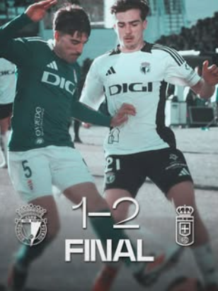
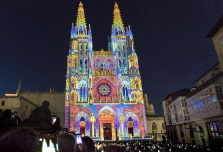
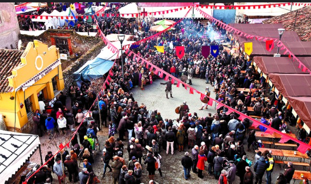
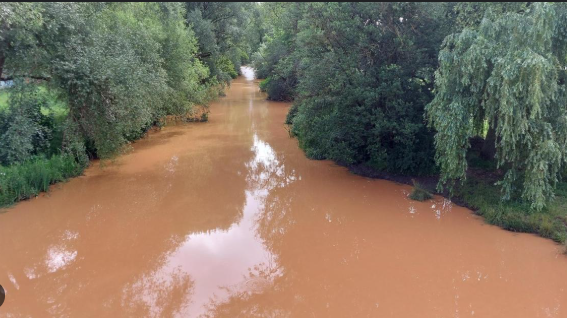

Inicio Sesión
Lugares de interes

Noticias

El Burgos CF sufre una derrota ante el Oviedo en un partido reñido.

La Catedral de Burgos ilumina la ciudad con un espectáculo de luces por su aniversario.

El Mercado Medieval de Burgos atrae a miles de visitantes con su ambiente histórico.

El río Arlanzón alcanza niveles récord tras las fuertes lluvias de la semana.

La Feria de Tapas de Burgos reúne a los mejores chefs con innovadoras creaciones.